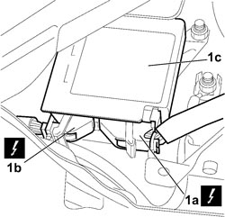
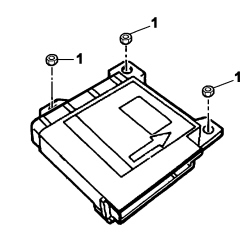
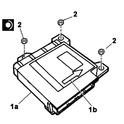

5580C14 AIR BAG ECU - R+R
- Path
- Procedures > 55 ELECTRICAL EQUIPMENT > 5580 SPECIAL ACCESSORIES > 5580C AIR BAG SYSTEM > 5580C14 AIR BAG ECU - R+R
- Kind
- repair procedure (removal / refitting; the operation number is the code)
- Applies to
- all engines; all production periods
- Interactive page
- https://sloeber94.github.io/elrnDB-fCrm/en/#/194000803
Applies to: all engines; all production periods
- Turn the ignition key to the OFF position and extract it.
- Disconnect the negative and positive battery terminals and insulate them.
- Wait for 10 minutes before continuing.
Description | Connector | |
|---|---|---|
BATTERY |
Applies to: all engines; all production periods
 Removing
Removing
 Refitting
RefittingOp. 7040A65 CONSOLE SIDE CLOSING (ONE) - R.R.
1. Working underneath the dashboard, on the passenger side, move the edge of the carpet slightly, then disconnect the electrical connections (1a) and (1b) for the control unit (1c).
Description | Connector | |
|---|---|---|
1a | AIR BAG CONTROL UNIT |
Description | Connector | |
|---|---|---|
1b | AIR BAG CONTROL UNIT |

Applies to: all engines; all production periods
1. Unscrew the air bag control unit nuts and remove the unit from its seat.

Applies to: all engines; all production periods
Refitting
RemovingObserve the following precautions:
1. Position control unit (1a) in its seat, making sure that the arrow (1b) on the top of the control unit is facing the direction of travel.
2. Screw in the air bag control unit nuts and tighten to the specified torque.
Component | Fastening | dia | Value (daNm) | Validity |
|---|---|---|---|---|
AIR BAG CONTROL UNIT | Nut | M6 | 0,64 ÷ 0,96 |

Applies to: all engines; all production periods
- Connect the electrical connections.
Description | Connector | |
|---|---|---|
AIR BAG CONTROL UNIT |
Description | Connector | |
|---|---|---|
AIR BAG CONTROL UNIT |
- Position the carpet.
Op. 7040A65 CONSOLE SIDE CLOSING (ONE) - R.R.
- Connect the negative and positive battery terminals.
Description | Connector | |
|---|---|---|
BATTERY |
- Use an Examiner to check that the system has not acquired errors during the operation.
Topics linked from this page (4)
- 5580C AIR BAG SYSTEM
- 7040A65 CONSOLE SIDE CLOSING (ONE) - R.R.
- A001 BATTERY
- M060 AIR BAG CONTROL UNIT